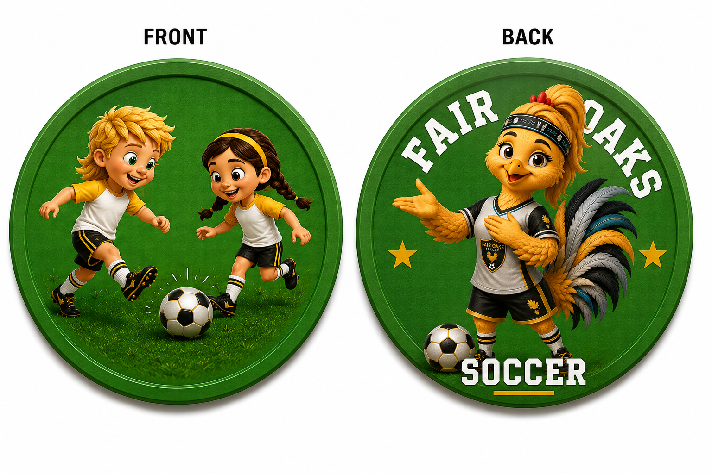

Canonical iconography

Shared play is the front-facing story; the Fair Oaks rooster is the reverse-side brand anchor. Preserve the inclusive two-player image and green field.
Player promise
I helped someone, shared space, or made the team better.
Coach looks for
Inviting a teammate, returning a ball, sharing equipment, celebrating someone else, or solving a problem together.
Visual language
- Two or more players cooperating
- Fair Oaks rooster as supporting mascot
- Open gesture, shared ball, welcoming energy
- Avoid podiums, rankings, or “best player” imagery
Digital color anchors
#28744D
#101113
#C8A12B
#FFFFFF